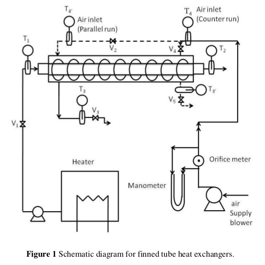

FINNED TUBE HEAT EXCHANGER
AIM
I. To calculate rate of heat transfer, LMTD (Log Mean Temperature Difference) and overall heat transfer coefficient for parallel/counter flow type of heat exchanger.
II. To obtain the effectiveness of the given heat exchanger.
THEORY
Extended surfaces of fins are used to increase the heat transfer rate from a surface to a fluid wherever
it is not possible to increase the value of the surface heat transfer coefficient or the temperature difference
between the surface and the fluid. The fins are attached to the primary heat transfer surface to increase the
heat transfer coefficient for low thermal conductivity fluids. The temperature difference with surrounding fluid
will steadily diminish as one moves out along the fin. Some of the applications of the fins are: circumferential
fins around the cylinder of a motor cycle engine, fins attached to condenser tubes of a refrigerator, etc.
The finned tube heat exchangers, depending on fins, are categorized as follows:
- An individually finned tube exchanger or simply a finned tube exchanger, having normal fins on individual tubes
- A tube-fin exchanger having flat (continuous) fins; the fins can be plain, wavy,or interrupted, and the array of tubes can have tubes of circular, oval, rectangular, or other shapes
- longitudinal fins on individual tubes:
(a) continuous plain;
(b) cut and twisted;
(c) perforated;
(d) internal and external longitudinal fins.
The finned parallel/counter-flow heat exchanger consists of following components:
- Main Frame
- Tube attached with circumferential fins.
- Temperature sensors and indicators.
- Hot water generator (geyser).
- Flow rate sensors and indicators.
Hot fluid is hot water, which is heated with the help of heater fitted in the tank and circulated with the help of
a pump. Cold fluid is air and pumped in the inner tube with the help of a blower. Different valves are provided
in the system to regulate the flow rate of liquid and make the system to run in parallel mode or counter-flow mode.
EXPERIMENTAL SETUP AND SCHEMATIC DESCRIPTION
The apparatus consists of a tube in tube type concentric tube heat exchanger.
The hot fluid is hot water which is obtained from geyser fitted in the tank.
It flow through the inner tube while cold fluid is air flowing through annulus.
The hot water flows in one direction while direction of air can be reversed with the help of valves to run the apparatus
in parallel flow mode or counter-flow mode. Air is passed using blower which passes through orifice meter attached with manometer.
Manometric fluid is water.

SPECIFICATIONS
Copper
15 mm
19 mm
G.I. (GALVANIZED IRON)
65.3 mm
No. of longitudinal fins :
41
1 m
3 kW (3 nos.)
Digital Temp. Indicator :
0- 300 deg C)
0.025m
4.9 * 10-4 m2
50 mm
2 mm
EXPERIMENTAL PROCEDURE
- Start the flow of water, by adjusting the valve.
- Switch on the heaters (geysers).
- Run the unit either in parallel flow or counter flow arrangement.
- For parallel flow, the flow of hot and cold water should be from the same end and
for counter flow the flow of hot and cold water should be from opposite end.
Make this arrangement as per requirement.
- The description for parallel and counter flow arrangement, as per the above Figure, is as follows:
FOR PARALLEL FLOW:
- Open the valves V1, V2, V3 and V4 and close the valve V5.
- Wait for the temperature to stabilize on the indicator.
- As the temperatures become steady, note down the air and water flow rates.
- Record the temperature for the four channels, i.e. V1, V2, V3 and V4, using switch on the panel.
FOR COUNTER-CURRENT FLOW:
- Open the valves V1, V2 and V5 and close the valves V3 and V4.
- Wait for the temperature to stabilize on the indicator.
- As the temperatures become steady, note down the air and water flow rates.
- Record the temperature for the four channels, i.e. T1, T2, T4 and T3, using switch on the panel.
- Switch on the blower to have air flow in the annulus section.
- Adjust the air flow rate with the help of gate valve and manometer.
- Leave the system for 15 minutes to get stabilized.
- Once the temperature of the hot water gets stabilized, note down the temperatures and flow rates.
- Record the readings by varying flow rates for both hot and cold sides.
OBSERVATIONS AND CALCULATIONS
Observation Table
Calculations
RESULTS AND DISCUSSIONS
I. The overall heat transfer coefficients, effectiveness and number of transfer units in
finned tube heat exchanger for both parallel and counter flow configurations are as
follows:
| Flow Configuration |
Ui |
Uo |
epsilon |
NTUi |
NTUo |
| PARALLEL FLOW |
|
|
|
|
|
| COUNTER-CURRENT FLOW |
|
|
|
|
|
II. Compare the values of ε, U
o, U
i for both cases and discuss its physical significance.
PRECAUTIONS
- Never run the apparatus if power supply is less than 180V and above 230V.
- Never switch ON mains supply before ensuring that all the ON/OFF switches given on
the panel are at OFF position.
- Do not put on heater unless water flow is continuous.
- Equipment should be earthed properly.
- Once the experiment is complete, drain out the water from both the tubes.
REFERENCES
- Coulson, J.M., Richardson, J.F., "Coulson & Richardson's Chemical Engineering"
Volume 6, 6th ed., Asian Books ltd., ND, 1996, Page 655-668.
- McCabe, Smith ,J.C., Hariott, P., "Unit Operations of Chemical Engineering",
Seventh Edition. McGraw Hill, NY, 2005, Page 327-329,331-333.
- Cengel Yunus A, "Heat and Mass Transfer" 2nd Edition, Mc Graw Hill, Chapter 13,
Page 667-705.